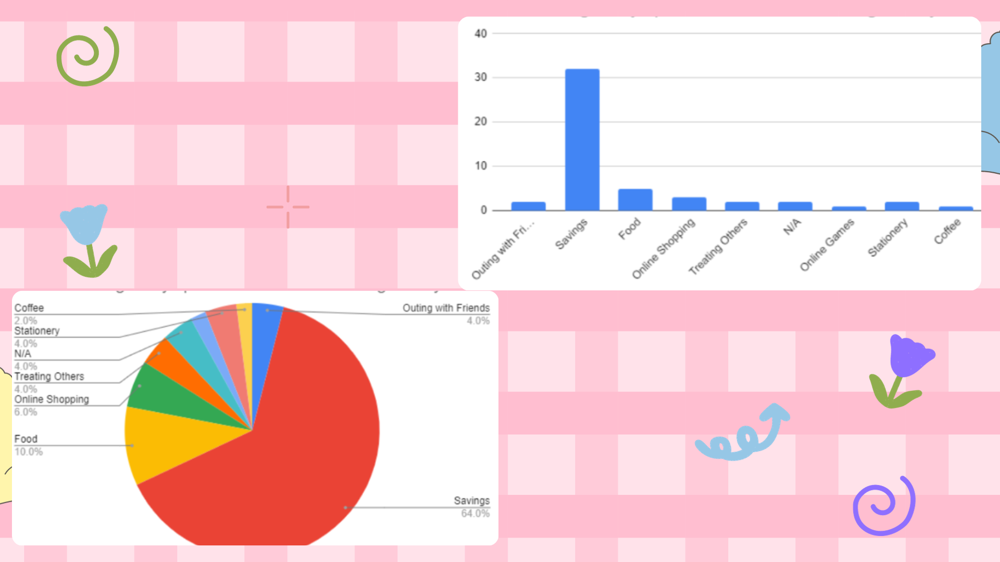

As seen from the histogram above, most of the data is on the left and its tail is on the right.
This indicates that the chart is skewed to the right.
The boundary with the highest frequency in this case is 485.5-821.5 with a frequency of 26.
This suggests that the amount of money high school students usually receive
as allowance ranges from ₱485.5 - ₱821.5.
The box and whisker plot shown above dictates that the plot is positively skewed.
As you can see, the median is in the lower bottom/part of the plot, indicating that it is positively skewed.
The interquartile range represents the amount of variation between the 1st and 3rd quartiles.
In this plot, the IQR is 600, indicating that there is a large amount of variation between the
1st and 3rd quartiles and that they are more spread out.
The dots/circles in the plot above are actually the outliers.
Outliers are data values that lie on a greater distance from the others.
The outliers in this plot are ₱2000, ₱2100, and ₱2500.
The students who received an allowance with any of these 3 numbers have a higher allowance
compared to the other students.
Just like the histogram in 1, this chart is also skewed to the right.
Most of its data is on the left, while the tail is on the right side of the chart.
In this chart, we can observe that the data/class boundary with the highest frequency of 21 is ₱-0.5 - ₱271.5.
This dictates that the amount high school students spend in school ranges from ₱-0.5 to ₱271.5.
Just like in the box and whisker plot for the weekly allowance, the box and whisker plot for the total expenses
is positively skewed. The median is in the lower bottom part of the plot, indicating that it is positively skewed.
As for its interquartile range, or “IQR” for short, the IQR of this plot is 380. This means that the
difference/distance between the 1st and 3rd quartile is 380. The IQR dictates that the variation
between them is still quite big, but smaller when compared to the IQR of the weekly allowance of the students.
For the outliers, there are 3 dots on the plot, meaning that we also have 3 outliers.
These outliers are ₱1500, ₱1700, and ₱1900. These indicate that the students who spend more than
₱1500 weekly on school, spend much more money than the other students.
According to these graphs, most of the respondents are in the 7th grade, taking over 46% of the sample. Next in numbers are the 9th graders, being 9 numbers behind the 7th graders, taking over 28% of the sample. There are also the 11th graders and 8th graders with 24% and 2% respectively. Overall, most of our high school respondents are in the first year of high school, and least of them are in the second year of high school.
It shows that 32 respondents (64% of the sample) save their remaining allowance to their savings. Meanwhile, five respondents (10%) spend their remaining allowance on food, about 6% spend it on online shopping. 2 votes go to N/A = there is no money left for them after a week.
Based on our research we found a lot of exciting information about our target audience, young adults
aged 18-25 and high school students. We found out that the average allowance,
per week, given to our target audience is 879 pesos.
The majority of their allowance goes to savings, next is food, and the 3rd most common expense is online shopping.
We also found it interesting that one of the more unimportant expenses people consider is the videogame money
and coffee money.
Through this activity, we learned the importance of data, and how statistics is the basis of all sciences.
Through data analysis, we learn more about how our society works, preferences of the masses.
We can make a conclusion on how to further improve our society and how we can move forward with it.